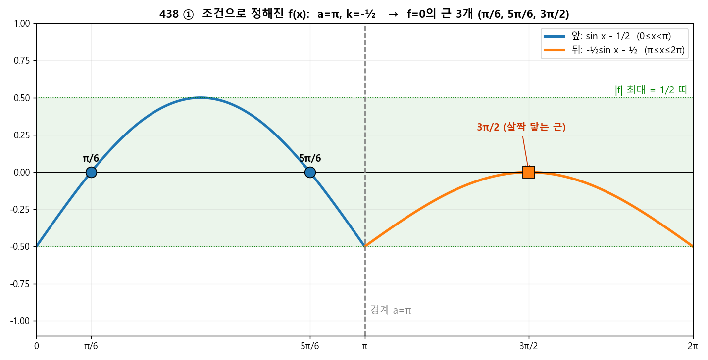
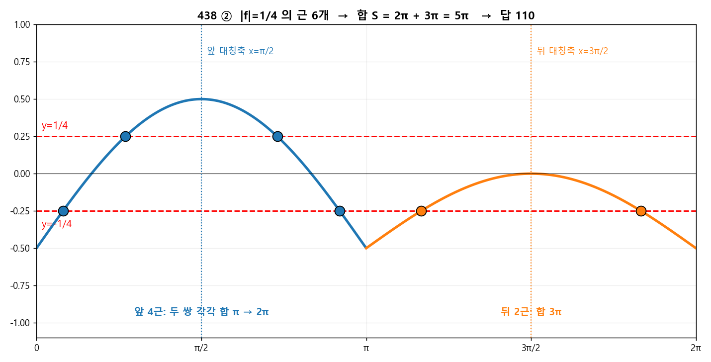

🧩 q438 ⭐ 최고난도 (교육청 기출)¶
단원: 삼각함수 — 조건으로 \(a,k\) 결정 후 실근 합 · 정답: 110
🔗 원본 (sources, 불변 — 링크만)¶
{kind=link}
🎯 문제¶
\(0\le x\le2\pi\)에서 \(f(x)=\sin x-\frac12\ (0\le x<a)\), \(f(x)=k\sin x-\frac12\ (a\le x\le2\pi)\). (가) \(|f|\)의 최댓값 \(=\frac12\). (나) \(f=0\)의 실근 3개. → \(20\left(\frac{a+S}{\pi}+k\right)\), \(S=\) (\(|f|=\frac14\)의 모든 실근 합).
🧱 1단계 — (가)로 "\(a\)의 범위"를 가둔다¶
\(|f|\le\frac12\) 가 모든 \(x\)에서 성립해야 한다.
앞 조각 \(\sin x-\frac12\): \(\left|\sin x-\frac12\right|\le\frac12 \iff 0\le\sin x\le1 \iff \sin x\ge0\). \(\sin x\ge0\)은 \([0,\pi]\)에서만. 그러니 앞 조각이 덮는 \([0,a)\)는 \(\pi\)를 넘으면 안 된다 → \(\boxed{a\le\pi}\). (만약 \(a>\pi\)면 \(x\in(\pi,a)\)에서 \(\sin x<0\), \(f<-\frac12\) → \(|f|>\frac12\) 위반.)
🧱 2단계 — (가)로 "\(a=\pi\), \(k\le0\)"까지 좁힌다¶
뒤 조각 \(k\sin x-\frac12\): \(|k\sin x-\frac12|\le\frac12 \iff 0\le k\sin x\le1\) (뒤 구간 전체에서).
\(a\le\pi\)이므로 뒤 구간 \([a,2\pi]\)는 \((\pi,2\pi)\)를 반드시 포함(여기 \(\sin x<0\)). - \(\sin x<0\)인 곳에서 \(k\sin x\ge0\) 이려면 \(k\le0\). - 그런데 만약 \(a<\pi\)면 뒤 구간이 \((a,\pi)\)도 포함(\(\sin x>0\)). 거기서 \(k\le0\)이면 \(k\sin x-\frac12<-\frac12\) → 위반.
두 요구가 충돌하지 않으려면 뒤 구간에 \(\sin x>0\)인 부분이 없어야 한다 → \(\boxed{a=\pi}\) (경계 \(x=\pi\)는 \(\sin=0\)이라 무해).
정리: \(a=\pi\), 그리고 \(k\le0\). 추가로 \(x=\frac{3\pi}{2}\)에서 \(\sin=-1\) → \(-k\le1\) → \(k\ge-1\). 즉 \(k\in[-1,0]\).
🧱 3단계 — (나)로 "\(k=-\frac12\)" 확정¶
\(a=\pi\)이면: - 앞 \([0,\pi)\): \(f=0\Rightarrow\sin x=\frac12\Rightarrow x=\frac\pi6,\frac{5\pi}{6}\) → 2개 고정. - 뒤 \([\pi,2\pi]\): \(f=0\Rightarrow\sin x=\frac{1}{2k}\) (\(k<0\)이라 음수).
전체 3개가 되려면 뒤에서 정확히 1개. \(\sin x=c\ (c<0)\)는 \([\pi,2\pi]\)에서 보통 2개인데, \(c=-1\)일 때만 1개(\(x=\frac{3\pi}{2}\)). $\(\frac{1}{2k}=-1\ \Rightarrow\ \boxed{k=-\tfrac12}.\)$ (검: \(k=-1\)이면 \(\sin x=-\frac12\) → 2개 → 합 4개 ✗. \(-\frac12<k<0\)이면 \(\frac1{2k}<-1\) → 0개 → 2개 ✗. \(k=-\frac12\)만 OK.)
✔ (가) 재확인: 뒤 조각 \(-\frac12\sin x-\frac12=-\frac12(\sin x+1)\), \([\pi,2\pi]\)에서 \(|f|=\frac12(\sin x+1)\in[0,\frac12]\) ✅. ✔ (나) 실근 \(\{\frac\pi6,\frac{5\pi}{6},\frac{3\pi}{2}\}\) — 3개 ✅. (\(x=\frac{3\pi}{2}\)는 \(|f|\)가 0에 접하는 근.)
확정: \(a=\pi,\ k=-\dfrac12\). 이제 함수는 $\(f(x)=\begin{cases}\sin x-\frac12 & (0\le x<\pi)\\ -\frac12\sin x-\frac12 & (\pi\le x\le2\pi)\end{cases}\)$

🖼️ 조건 (가)·(나)로 함수가 딱 하나로 정해진다: \(a=\pi,\ k=-\frac12\). 초록 띠(\(|f|\le\frac12\))를 벗어나지 않고, \(f=0\)이 되는 곳이 정확히 3군데(π/6, 5π/6, 그리고 살짝 닿는 3π/2).
🧱 4단계 — \(|f|=\frac14\)의 실근 합 \(S\)¶
앞 \([0,\pi)\): \(\sin x-\frac12=\pm\frac14\). - \(\sin x=\frac34\): 두 해 합 \(=\pi\) (해가 \(\arcsin\frac34\)와 \(\pi-\arcsin\frac34\), 합 \(\pi\)). - \(\sin x=\frac14\): 두 해 합 \(=\pi\). → 앞에서 4개, 합 \(=2\pi\).
뒤 \([\pi,2\pi]\): \(-\frac12\sin x-\frac12=\pm\frac14\). - \(+\frac14\): \(\sin x=-\frac32\) → 해 없음. - \(-\frac14\): \(\sin x=-\frac12\) → \(x=\frac{7\pi}{6},\frac{11\pi}{6}\), 합 \(=3\pi\). → 뒤에서 2개, 합 \(=3\pi\).
꿀팁: \(\sin x=c\)의 두 해는 \(\theta\)와 \(\pi-\theta\)(또는 \(\pi+\,\)대칭) → 합이 대칭축의 2배라 일일이 안 구해도 합이 바로 나온다.
🧮 5단계 — 최종 계산¶

🖼️ \(|f|=\frac14\)은 \(y=\pm\frac14\) 두 줄과 만나는 점. \(\sin\)의 대칭 덕분에 근을 일일이 안 구해도 합이 나온다: 앞 4근(두 쌍, 각 합 π) = 2π, 뒤 2근 = 3π → \(S=5\pi\).
✅ 최종 답: 110¶
🧠 한 줄 교훈¶
- (가)는 "\(|f|\le\frac12\) ⇒ 각 조각의 부호 제약"으로 읽어 \(a\)를 가두는 게 1순위.
- 갈림(분기) 함수는 경계 \(x=a\)가 부호 0이 되는 곳이라는 게 핵심 단서(\(a=\pi\)).
- 실근의 합은 \(\sin\) 대칭성으로 통째 계산 — 근을 다 구할 필요 없다.